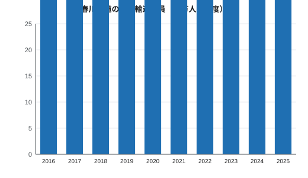

春川鉄道
| 春川鉄道株式会社 Harukawa Railway Co., Ltd. | |
|---|---|
 蛍谷駅に停車する鏡線の2000系普通列車 | |
| 会社概要 | |
| 通称 | ハルテツ（HaruTetsu） |
| 種類 | 株式会社 |
| 設立 | 1923年（大正12年）（鏡谷鉄道として） |
| 社名変更 | 1951年（昭和26年） |
| 本社所在地 | みのり県春川市駅前町1-1 春川中央テラス |
| 代表者 | 代表取締役社長 速水浩介 |
| 営業収益 | 89億円（2024年度） |
| 従業員数 | 684人（2026年4月現在） |
| 鉄道事業 | |
| 路線 | 鏡線（38.6 km） 湾岸線（16.2 km） |
| 営業キロ | 54.8 km |
| 駅数 | 22駅 |
| 軌間 | 1,067 mm |
| 電化方式 | 直流1,500 V 架空電車線方式 |
| 保有車両数 | 46両 |
| 輸送人員 | 約4,100万人（2025年度） |
| ICカード | ハルカ |
春川鉄道株式会社（はるかわてつどう）は、みのり県春川市に本社を置く鉄道事業者である。通称はハルテツ。鏡川の谷をさかのぼって温泉地の月見温泉に至る鏡線（38.6 km）と、みのり湾の北岸に沿ってみのり港に至る湾岸線（16.2 km）の2路線、営業キロ計54.8 km・22駅を運営する。両線とも春川中央駅を起点とし、本社も同駅の駅ビル内にある。2025年度の輸送人員は約4,100万人（1日平均乗車人員112,430人）、2026年4月現在の従業員数は684人で、2024年度の営業収益は89億円であった[1]。
1923年（大正12年）に鏡谷鉄道（かがみだにてつどう）として設立され、1926年に技師長服部健三のもとで最初の区間（春川 - 釜野間）を開業した。1951年に現社名へ改称した。看板列車は春川中央駅と月見温泉駅を39分で結ぶ特急「月影」である。このほか、非接触型ICカード乗車券「ハルカ」を発行している。
歴史[編集]
鏡谷鉄道時代（1923年 - 1951年）[編集]
鏡谷鉄道は1923年、資本金30万円で設立された。出資者の中心は呉服町・魚町の商人とみのり銀行である。陶山の窯場で焼かれる春川焼や上流の木材・木炭を町や港へ運び、月見温泉への湯治客を運ぶことが目的であった[2]。技師長には、魚町出身で官設鉄道に25年間勤めた服部健三が招かれた。服部は鏡川沿いのルートを計画し、線路は当初から国有鉄道と同じ軌間1,067 mmで建設された。1926年（大正15年）7月15日に春川 - 釜野間13.5 kmが開業し、ドイツから輸入した小型のタンク式蒸気機関車4両で営業を始めた。
その後、路線は3段階に分けて谷沿いに延伸された。1928年5月20日に柚子原まで、1929年11月3日に新設の二股橋梁を渡って蛍谷まで、1931年（昭和6年）10月4日に延長2,184 mの月見トンネルを抜けて月見温泉まで開業した。鉄道の到達によって月見温泉は保養地として発展した。服部は1931年から1938年まで社長を務めた。1945年7月29日の空襲で1926年築の木造の春川駅舎と車両数両を焼失したが、1週間以内に釜野までの運転を再開した[要出典]。
春川鉄道への改称（1951年 - 1986年）[編集]
1951年に社名を春川鉄道へ改め、1952年に鏡線を直流1,500 Vで電化した。1962年10月1日には、開業当初から旅客と貨物の両方を扱う湾岸線をみのり港まで開業し、港と春川造船所への輸送を担った。同日、春川駅を春川中央駅に改称した。湾岸線の建設を強く推したのは市長の佐伯哲夫で、1954年の4村合併を経て市街地が湾岸に広がりつつあった[3]。1968年には鏡線の複線区間を釜野まで延ばした。
特急「月影」と近代化（1987年 - 2010年）[編集]
1987年、新造の6000系による特急「月影」の運転を開始し、同年に貨物輸送を廃止した。車両の更新も進み、1996年に鏡線普通列車用の2000系、2004年に湾岸線用の5000系を投入した。1998年には湾岸線の春川中央 - 新港通間を高架化した。
2011年以降[編集]
2011年3月26日、高架化された春川中央駅と新駅ビル「春川中央テラス」が開業し、本社を同ビルに移転した[4]。2012年にはICカード「ハルカ」を導入した。2019年3月16日には月影用の8000系が6000系に代わって営業運転を開始した。新型コロナウイルス感染症の流行により2020年度の輸送人員は2,980万人に落ち込み、1950年代以来の低水準となった[要出典]が、2025年度には4,100万人まで回復し、2019年度の約97 %の水準に戻った。2024年にはスマートフォン用の「モバイルハルカ」を開始した。
2026年11月14日（土）のダイヤ改正では、「月影」の全列車が月見口にも停車して全線の所要時間が41分となり、快速が川端に停車するようになる。また、湾岸線の平日10時から16時40分までの運転間隔が20分から15分に短縮され、両線とも一部の最終列車が繰り下げられる。運賃・特急料金・各種きっぷの価格は変わらない[5]。
路線[編集]

| 路線名 | 英語名 | 区間 | 営業キロ | 駅数 | 開業 |
|---|---|---|---|---|---|
| 鏡線 | Kagami Line | 春川中央 - 月見温泉 | 38.6 km | 14 | 1926年7月15日 |
| 湾岸線 | Bayside Line | 春川中央 - みのり港 | 16.2 km | 9 | 1962年10月1日 |
2路線の合計は54.8 km、22駅である[注 1]。いずれも軌間1,067 mm、直流1,500 Vで電化されている。鏡線は春川中央 - 釜野間13.5 kmが複線で、それより先は行き違い設備を備えた単線である。最高速度は95 km/h、最急勾配は蛍谷 - 月見温泉間の25 ‰である。普通列車（全線63分）、1時間毎の快速（55分）と特急「月影」（39分）が運転される。湾岸線は春川中央 - 新港通間5.0 kmが複線の高架区間である。列車は全駅に停車して全線28分で結び、平日の朝夕は15分間隔、平日の日中と土休日は20分間隔で運転される。
車両[編集]

保有車両は3形式46両で、すべて西浦市の西浦車輌製の電車である[1]。鏡線の釜野車両基地と湾岸線の海岸車庫で検修を行う。
| 形式 | 使用線区 | 登場 | 編成 | 編成数 | 両数 | 塗装 |
|---|---|---|---|---|---|---|
| 2000系 | 鏡線普通列車・快速 | 1996年 | 2両 | 8 | 16 | クリーム色にリバーブルーの帯 |
| 5000系 | 湾岸線 | 2004年 | 3両 | 7 | 21 | 白に海緑色の帯 |
| 8000系 | 特急「月影」 | 2019年 | 3両 | 3 | 9 | 紺色に金色の帯 |
8000系は最高速度120 km/hで設計されているが、鏡線の最高速度である95 km/hを超えて走ることはない。引退した形式には、2000系に置き換えられた1000系（1965年登場）と、初代の「月影」用車両である6000系（1987年 - 2019年、6001編成が月見温泉駅で保存）がある。
輸送実績[編集]


輸送人員は2016年度に4,390万人、2019年度に4,240万人であったが、新型コロナウイルス感染症の影響で2020年度は2,980万人に減少した。その後は毎年増加し、2021年度3,300万人、2022年度3,730万人、2023年度3,960万人、2024年度4,040万人、2025年度4,100万人となったが、2019年度の水準にはまだ届いていない。2025年度の1日平均乗車人員は112,430人で、内訳は春川中央駅38,420人、同駅を除く鏡線の各駅43,590人、同じく湾岸線の各駅30,420人である[6]。特急「月影」の利用者は年間約40万人。春川中央駅が突出して多く、最少は1日190人の蛍谷駅である。1年で最も混雑するのは10月の春川灯籠まつりの週末である。
運賃・乗車券[編集]
運賃は距離制で、3 kmまでの初乗り運賃170円から、最も遠いみのり港 - 月見温泉間の970円までである。ハルカで支払うと最大18円安くなる。小児運賃は大人の半額（10円未満切り捨て）である[注 2]。最後の運賃改定は消費税率が10 %に引き上げられた2019年10月1日である[7]。
| 行き先 | 路線 | 営業キロ | 大人 | ハルカ | 小児 |
|---|---|---|---|---|---|
| 本町 | 湾岸線 | 1.5 km | 170円 | 168円 | 80円 |
| 城町 | 鏡線 | 1.8 km | 170円 | 168円 | 80円 |
| 春川大学前 | 鏡線 | 3.6 km | 210円 | 209円 | 100円 |
| 釜野 | 鏡線 | 13.5 km | 330円 | 324円 | 160円 |
| みのり港 | 湾岸線 | 16.2 km | 410円 | 402円 | 200円 |
| 鏡峡 | 鏡線 | 23.6 km | 490円 | 481円 | 240円 |
| 月見温泉 | 鏡線 | 38.6 km | 730円 | 715円 | 360円 |
特急「月影」は全車指定席で、運賃のほかに特急料金が必要である。特急料金は25 kmまで520円、26 km以上760円で、繁忙期は200円増し、車内で購入すると260円増しとなる。プレミアム車両はさらに700円を加算する。したがって春川中央から月見温泉まで月影を利用すると1,490円、プレミアムでは2,190円となる[7]。両線の普通列車と快速が1日乗り放題となる「1日フリーきっぷ」（平日1,300円、土休日1,100円、小児半額）もあるが、特急料金は別途必要である。「月見温泉ゆけむりきっぷ」（2,800円）は、月見温泉までの往復乗車券に「月影」の往復指定席、共同浴場の入浴券、500円分の利用券を組み合わせたものである。
2012年に導入されたICカード「ハルカ」は全駅のほか春川市営バスと月見バスで利用できるが、空港リムジンバスでは使えない。デポジットは500円、チャージ上限は2万円で、2024年の発行枚数は約41万枚である。
接続するバス[編集]
ハルテツはバス事業を行っていない。路線バスは春川市営バスが運行しており、春川中央駅発着の1系統「城下町循環」や、釜野の焼物の里へ向かう21系統などがある。上流域では月見バスが運行し、5系統が月見温泉駅から月見山の月見ロープウェイまでを結ぶ（所要25分、480円、40分間隔、最終16時20分）。みのり空港行きの空港リムジンバスは春川中央駅南口から30分間隔で発車し、所要55分、運賃1,300円である[8]。
関連項目[編集]
脚注[編集]
注釈[編集]
出典[編集]
- ^ a b 春川鉄道株式会社『ハルテツ ファクトブック2026』春川鉄道、2026年、2–5頁。
- ^ 春川鉄道株式会社編『ハルテツ百年史』春川鉄道、2023年、12–19頁。
- ^ 春川市史編さん委員会編『春川市史』第4巻 近代編、春川市、1989年、402–411頁。
- ^ 「新・春川中央駅が開業 テラス初日に3万人」『春川日報』2011年3月27日、1面。
- ^ 春川鉄道「2026年11月14日（土）ダイヤ改正について」お知らせ、2026年10月。
- ^ みのり県企画部『みのり県交通統計 令和7年度版』みのり県、2026年、37頁。
- ^ a b 春川鉄道株式会社『旅客運賃表』改訂版、春川鉄道、2019年、4–9頁。
- ^ 春川市交通局『春川市営バス路線案内2026』春川市、2026年、3頁。
参考文献[編集]
- 森孝宏『西日本の私鉄』鉄道書院、1998年、144–151頁。